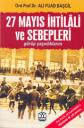
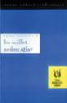

Siteyi açalı bir sene oldu(14 Nisan) ve geçti. Amacım CSS vd. web ile alakalı konular hakkında yaptığım uygulamalar ve araştırmalarımın sonucunu sizlerle paylaşmaktı. Bunu biraz bile başarabildiysem ne mutlu bana. CSS konusunda İngilizce bir çok kaynak olmasına karşın Türkçe kaynak sıkıntı hala devam ediyor. Ama geçen seneye oranla biraz ...
devamını oku27 Mayıs İhtilâli ve Sebepleri - Ali Fuat BAŞGİL
İlk baskısı 1966 yılında yapılmış olan '27 Mayıs İhtilali ve Sebepleri', kitabın yazarı olan Ord. Prof. Ali Fuad Başgil'in ölümünün 40. yılı anısına tekrar basılmış. Kitapta o dönemde yaşananların yakın bir tanığı olan Başgil, ihtilali anlatıyor. Fransızca olarak yazılan eser, dilimize ilk çevrildiğinde Başgil hakkında dava açılmıştı. Beraatle sonuçlanan ...
devamını oku11 Nisan 2007 Web'den seçme haberler
- Azer Koçulu'nun sitesini ben yeni gördüm ama güzel ve farklı çalışmaları var. Link
- HTML5 ve XHTML2 ve web'in geleceği hakkında İngilizce bir makale. Link
- 750px - 950px ve 100% olmak üzere üç kategoride CSS iskelet şablonları süren bir site. Link
- İnternet üzerinden çalışan çeviriciler(php'yi html, asp'yi ...
06 Nisan 2007 Web'den seçme haberler
- Kolay şekilde ajax kodları yazmamız için ücretsiz bir editör TIBCO. Link
- Güzel web tasarımı yapmanın prensipleri makalesi. Link
- RSS'in geleceği hakkında düşünceler. Link
- Display:none özelliğini erişebilirlik için kullanmak. Link
- Firefox'dan Flash hatalarını izlemeye ne dersiniz, Firefox'un FlashTracer eklentisi ile bunu yapabiliyoruz artık. Link
- Güzel bir Dreamweaver ...
Yeniden Mim Gözde Teknolojiniz Hangisi?
Hamdi Yaman'ın bize pasladığı yeni mim'imiz Gözde Teknolojimizin hangisi olduğu. Açıkçası arkadaşlar çoğunu yazmış, ama bizde yazalım bir kaçtane.
- Web tarayıcıları üzerinden sayfa düzenleme teknolojisi(örn: Firefox
- FireBug)
- Taşınabilir diskler.
- USB teknolojisi
- WordPress Blog
- Google Araçları
Ben teknolojiyi geriden takip eden biriyimdir. Ben pasımı Hasan Yalçın'a veriyorum ...
devamını oku- Web tarayıcıları üzerinden sayfa düzenleme teknolojisi(örn: Firefox
02 Nisan 2007 Web'den seçme haberler
- Ara sıra linklere tıklayınca sayfalar açılmıyor. Bu soruna benderastlıyorum, sorun için herkesten özür diliyorum, çözmeye çalışacağım.
- CSS'in önemine dikkat çekmek isteyen bir grubun uyguladığı çıplak CSS sayfafestivali! bu sene 2. sinin düzenliyor.Link
- CSS ile yazıcıya göre sayfa kodlamayı anlatan güzel bir İngilizce makale.Link
- Meta etiketleri hakkında yazılmış ...
29 Mart 2007 Web'den seçme haberler
- Güzel bir Firefox eklentisi Cooliris Previews.Web üzerindeki linkleri tıklayıp sayfayı ziyaret etmeden sayfayı görmemize olanak sağlayan bir eklenti. Engin'e öneri için teşekkürler. Link
- Adobe Creat Suite CS3 çıktı. Dreamweaver'da çok güzel yenilikler var. Ajaxanaçatısı eklenmiş. CSS hazır kodları ve yazım kolaylığı arttırılmış. mobiltelefon kontrolü sağlanmış, Photoshop ile ...
26 Mart 2007 Web'den seçme haberler
- Hasan Yalçın'dan Web2.0 hakkında güzel bir yazı serisine başlamış, devamını bekliyoruz. Link
- Secure Computing'in yaptığı araştırmaya göre en çok çöp(spam) e-posta ve olta yöntemi(phising) kullanılan e-posta gönderen ülkeler sıralamasında Çin ilk sırayı alıyor. %20,35 Çin, %10,55 Amerika, %9,57 Almanya. Neyseki biz bu ...
Bu Millet Neden Ağlar - O.Yüksel SERDENGEÇTİ
Milletimizin çektiği çileleri, 1940'lardaki dünya halindeki şartlarda anlatan O.Yüksel Serdengeçti. Günümüz Türkiyesinde hala benzer sorunlarla uğraştığımızı düşünürsek ne kadar yerimizde saydığımızı gösteriyor. O.Yüksel Serdengeçti, Doğu Türkistan, Kafkasya, Balkanlar ve dünyanın çeşitli yerlerindeki müslüman ve Türk milletinin çektiği acıları kimi zaman yazıları ve kimi zamanda şiirleri ile anltıyor ...
devamını okuMetin Yerine Resim/Flash Ekleme Teknikleri (Image Replacement)
Xhtml ile kodlama yaparken genelde metinleri kullanırız. Çünkü metinlerin eklemesi, düzenlemesi kolaydır ve arama motorları indekslemesini kolay yapar. Ancak bazı durumlarda metin yerine resim kullanmak sitemizin görselliği açısından önemlidir metinler CSS ile bir yere kadar şekillendirilir, bir çok metin şekillendirme yöntemini CSS ile yapamayız. Bazı durumlarda metin yerine resim kullanmak ...
devamını oku